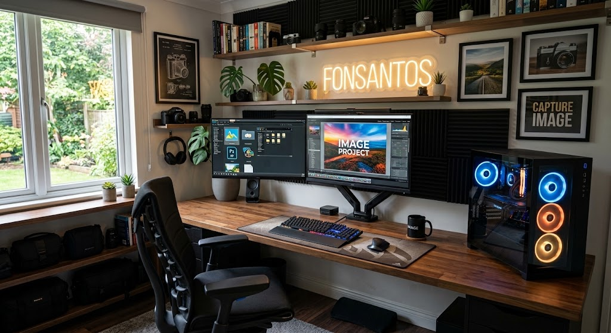

Sou uma pessoa movida pela curiosidade e pela vontade de construir coisas que façam sentido. Comecei minha jornada na tecnologia montando servidores Linux em notebooks velhos e quebrando sistemas para aprender como eles funcionam. Hoje, migro sistemas legados para arquiteturas modernas, como o Valkore, enquanto curso ADS e busco unir a prática à teoria. Valorizo a fé, a família e a amizade verdadeira — e acredito que o conhecimento só tem valor quando é compartilhado. Sou persistente, gosto de desafios e não abandono fácil o que importa.
Setup
